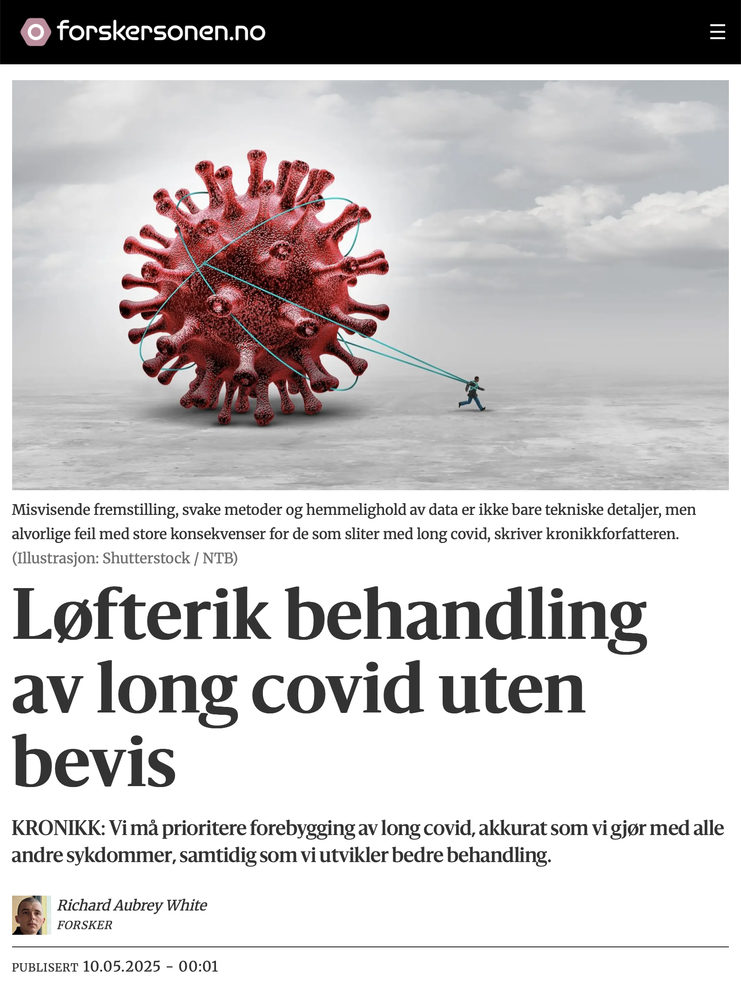

![]()

På Debatten 7. januar spurte Erna Solberg «Det er ikke bare i Norge [sykefraværet] økte, … men i de fleste andre land har sykefraværet gått ned igjen nå, men ikke her. Hvorfor?»
Dette spørsmålet har preget Norge i flere måneder, men dessverre, er debatten ført på feil premisser.
Det er tre tidsperioder som er relevante i diskusjonen om sykefravær: 2019 («før pandemien»), 2020–2022 («pandemiårene») og 2023 («etter pandemien»).
Under årene med pandemi hadde hvert land ulike tiltak, men i etterkant har alle europeiske land valgt samme strategi: Ignorere covid og dens senfølger.
Dette betyr at Solbergs sammenligning i praksis er en skjult sammenligning av pandemitiltak, siden disse varierte betydelig mellom landene. I 2023 er det ingen forskjeller mellom landenes strategier for tiden etter pandemien.
Dette gir inntrykk av at Norge gjør det «dårlig» sammenlignet med andre land, men dette er en feilaktig konklusjon. Grunnen er enkel: Norge gjorde en eksepsjonelt god jobb under pandemien.
Dermed fremstår andre land som om de har «forbedret» seg etter pandemien, når sannheten er at deres pandemi-strategier var svake.
I tillegg, når vi sammenligner sykefraværet i 2023 med 2022, ser vi at Norge faktisk ligger midt på treet i Europa.
Dette viser at hysteriet rundt norsk sykefravær er sterkt overdrevet.

For å få en nøytral vurdering av dagens sykefravær, bør vi sammenligne 2023 med 2019, da 2019 representerer et referanseår som ikke er påvirket av pandemien.
Denne analysen avdekker to viktige funn:
De fleste europeiske land har høyere sykefravær i 2023 enn i 2019, og Norge er helt gjennomsnittlig i denne sammenligningen.
Med dette perspektivet blir det klart at oppstyret rundt norsk sykefravær er ubegrunnet. Norge står seg godt i et europeisk perspektiv etter pandemien.

Hvorfor er sykefraværet høyere nå enn i 2019?
Fra 2023 har de fleste europeiske land hatt en la det skure-strategi med fri smitte, der mange blir smittet av covid-19 minst én gang i året.
Den 10. januar 2025 publiserte forskere fra FHI en studie som viser at blant nordmenn med tre vaksinedoser hadde omikronsmitte en risiko på 6 prosent for langvarige symptomer, kjent som «long covid» eller «senfølger av covid-19».
Dette innebærer at opptil 250.000 nordmenn kan få long covid hvert år. Det er tydelig at dette vil øke sykefraværet – noe vi allerede ser i tallene.
To vitenskapelige artikler fra to norske forskergrupper kom uavhengig av hverandre til samme konklusjon: En betydelig del av økningen i det norske sykefraværet skyldes sykdommer knyttet til akutt covid-19 og senfølger av covid-19. En studie fant til og med en tidsmessig sammenheng med koronabølger.
«Men hva med resten av verden? De har også covid!»
Ja, og vi ser lignende trender der.
Fra 2012 til 2019 var andelen voksne i Spania som rapporterte om en kronisk helsetilstand stabil på rundt 30 prosent. Da undersøkelsen startet opp igjen tidlig i 2022, hadde denne andelen hoppet til 42,3 prosent. I den siste rapporten fra oktober 2024 var andelen oppe i 49,5.
I USA var det fra 2015 til 2019 omtrent 30 millioner voksne med en funksjonsnedsettelse. Tidlig i 2022 var tallet cirka 32 millioner, og nå, i november 2024, er det 34,8 millioner.
I Storbritannia var antallet voksne som var ute av arbeid på grunn av langvarig sykdom stabilt på rundt to millioner fra 2013 til 2019. Sent i 2021 nådde det 2,4 millioner, og nå ligger det på 2,8 millioner.
Dette er selvfølgelig kun indisier, men det er også akkurat hva vi forventer å se fra millioner av gjentatte koronainfeksjoner hvert år.
Som å spille russisk rulett med kronisk sykdom
Covid er farligere enn du tror. Hver reinfeksjon er som å spille russisk rulett med kronisk sykdom. Sykefravær er bare toppen av isfjellet.
Mange med long covid er fortsatt i full jobb, bare med betydelig redusert livskvalitet. I tillegg finnes det ulike grader av long covid – for de med mild long covid kan reinfeksjon forverre tilstanden. Forebygging er derfor avgjørende.
Med målrettede tiltak mot det luftbårne koronaviruset kan vi redusere covid-19 betydelig med lavterskeltiltak:
- Informasjonskampanjer om risikoen for long covid (som i Australia) for å informere befolkningen om hvorfor det er så viktig å fortsette å bekjempe covid-19.
- Forbedre ventilasjon og luftfiltrering, spesielt i skoler og på sykehus. Dette gjøres i mange land, som Australia og USA, men ikke i Norge.
- UV-C-desinfisering av luft, som brukes for å beskytte mot tuberkulose.
- Anbefalinger om å bruke FFP2-munnbind innendørs og på kollektivtransport når det er mye smitte.
- Bevare dagens sykefraværsordning, slik at folk har råd til å bli hjemme mens de er syke og/eller smittsomme. En studie fra FHI viser at rask sykemelding ved nye oppståtte luftveissymptomer er kostnadseffektivt fordi det hindrer videre smitte til kollegaer.
Richard Aubrey White er forsker ved Folkehelseinstituttet, men skriver ikke på vegne av arbeidsgiveren.